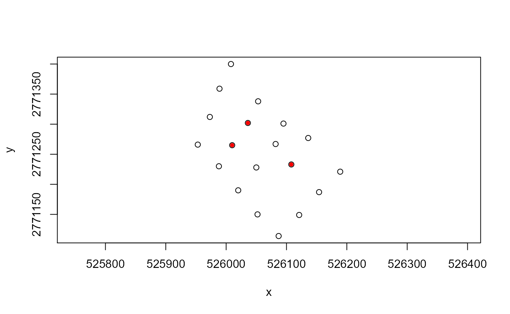
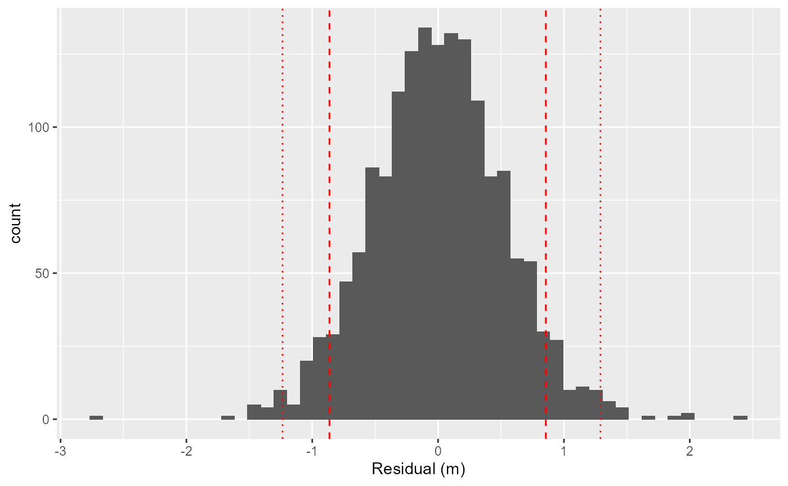
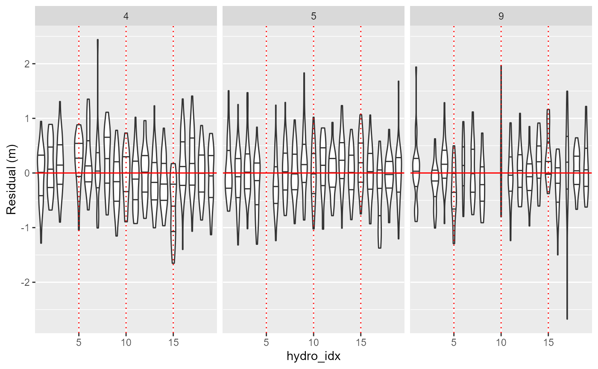
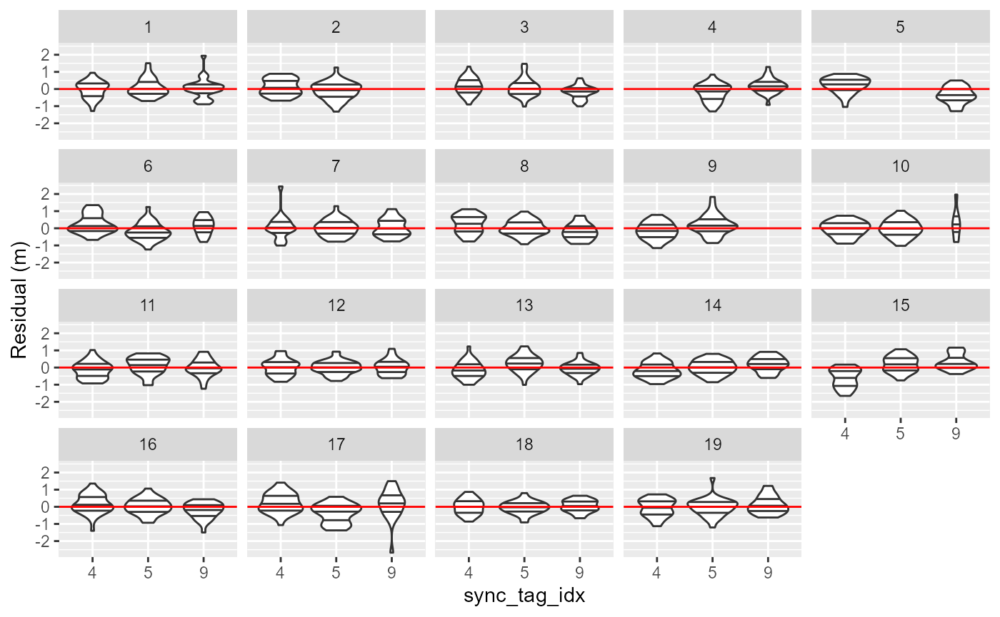
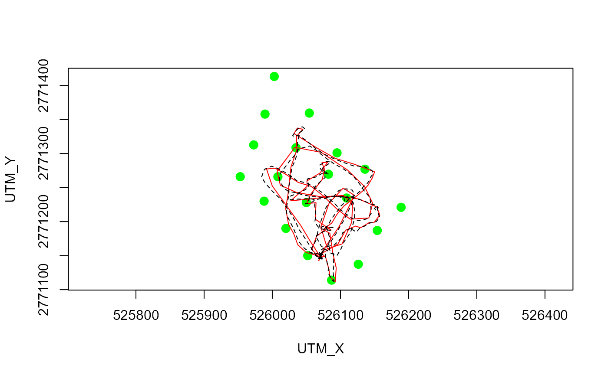
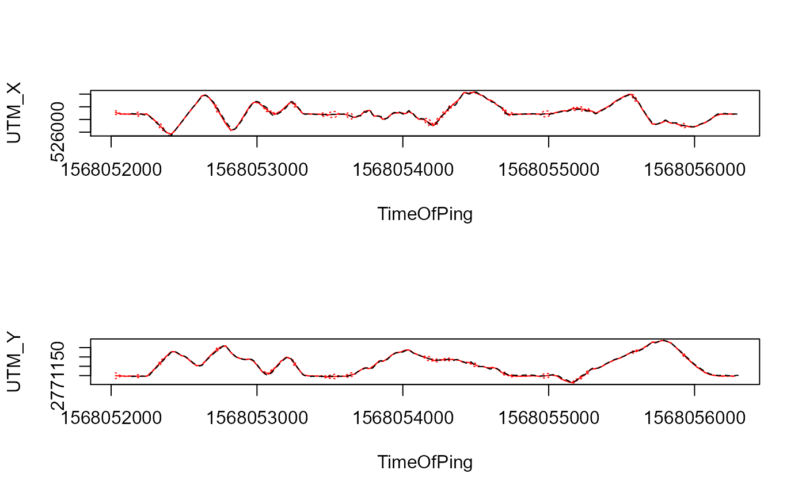

Tutorial 1 - installation, test and a quick example
Source:vignettes/site_articles/setup_and_test.Rmd
setup_and_test.RmdThis tutorial is the first place to start venturing into yaps. In this, we will ensure everything is running as expected and introduce a general workflow and basic functionality of yaps. The tutorial was developed for the Ideas OTN workshop held in Halifax February 2020 and adapted slightly.
Installation
yaps relies heavily on TMB (Template Model Builder). If not already installed, please install TMB and devtools. Then make sure you have the latest version of yaps installed. These steps are only needed once.
install.packages('devtools')
install.packages("TMB", type = "source")
devtools::install_github('baktoft/yaps', ref='dev_ows')Load libaries needed for this tutorial.
Load yaps and test that everything is working as expected. This should display a short simulated known track (in black) and the track estimated by yaps in red.
## Welcome to yaps (v1.2.3)
## Please let us know if you experience any trouble using yaps.
## Run testYaps() to ensure basic functions (incl. TMB) is working.
testYaps(silent=TRUE)## [1] "Running yaps..."
## [1] "...yaps converged (obj: -929.185357903387) with message: relative convergence (4)"
Getting started - the ssu1 example data set
This is a tiny data set collected as part of a feasibility study using YAPS on Vemco PPM style data to track fish in shallow parts of Florida Bay, USA. Data collected by J.S. Rehage, J.R. Rodemann, R.S. Corujo and N. Viadero. Included in yaps with permission from J.S. Rehage, FIU Florida International University.
Have a look at the data - details can be found in ?ssu1
names(ssu1)## [1] "hydros" "detections" "gps" "sync_model" "yaps_out"
head(ssu1$hydros)## serial x y z sync_tag idx
## 1: 128344 525973 2771312 1.8 NA 1
## 2: 128355 526136 2771277 1.5 NA 2
## 3: 128361 526189 2771221 1.1 NA 3
## 4: 128365 526108 2771233 1.7 59334 4
## 5: 128367 526010 2771265 1.5 59336 5
## 6: 128368 526087 2771114 0.7 NA 6Pretty self explanatory. Coordinates are in UTM - YAPS will (most probably) not work well with lat/lon data. Column sync_tag indicate serial number of special transmitters co-located with the hydrophones; data from these are used in the synchronization process. Column idx is an index running from 1:nrow(hydros).
plot(y~x, data = ssu1$hydros, asp=1)
points(y~x, data=ssu1$hydros[!is.na(sync_tag)], col="red", pch=20)
head(ssu1$detections)## ts tag epo frac serial
## 1: 2019-09-09 16:07:46 59334 1568045266 0.644 128368
## 2: 2019-09-09 16:09:21 59337 1568045361 0.932 128368
## 3: 2019-09-09 16:14:42 59334 1568045682 0.387 128368
## 4: 2019-09-09 16:17:21 59337 1568045841 0.083 128368
## 5: 2019-09-09 16:19:17 59336 1568045957 0.474 128368
## 6: 2019-09-09 16:21:50 59334 1568046110 0.579 128368Almost self explanatory. Each row is a detection of a transmitter (tag) on a hydrophone identified by serial. Column ts is the (non-synced) timestamp of the detection in timezone UTC. Column epo is ts converted to UNIX epoch using as.numeric(ts) and frac is fractions of second for the detection, i.e. the complete time of detection is given by epofrac = epo + frac.
head(ssu1$gps)## ts utm_x utm_y
## 1: 2019-09-09 18:02:18 526073.3 2771147
## 2: 2019-09-09 18:02:19 526073.3 2771147
## 3: 2019-09-09 18:02:25 526073.1 2771145
## 4: 2019-09-09 18:02:31 526072.5 2771145
## 5: 2019-09-09 18:02:39 526072.5 2771146
## 6: 2019-09-09 18:02:40 526072.6 2771146Quick map to see where we are in the world (check out leaflet - awesome for making quick slippy-maps)
Synchronizing the array
The code below is identical to that presented in our pre-print Opening the black box of high resolution fish tracking using yaps, which also include detailed description of the parameters in getInpSync().
First, set the parameters to be used in the sync model and get input data prepared for use with getSyncModel().
# set sync parameters
max_epo_diff <- 120
min_hydros <- 2
time_keeper_idx <- 5
fixed_hydros_idx <- c(2:3, 6, 8, 11, 13:17)
n_offset_day <- 2
n_ss_day <- 2
inp_sync <- getInpSync(sync_dat=ssu1, max_epo_diff, min_hydros, time_keeper_idx,
fixed_hydros_idx, n_offset_day, n_ss_day, keep_rate=0.25)## WARNING: getSyncModel() will estimate speed of sound. It is strongly advised to use data instead!
## NOTE: The designated time-keeper is not a fixed hydrophone - is this intentional?
## NOTE: At least one hydro has less than 50 pings in an offset_idx - try getSyncCoverage(inp_sync, plot=TRUE) for visual
## and rerun getInpSync() with increased keep_rateThen, obtain a synchronization model using getSyncModel()
sync_model <- getSyncModel(inp_sync, silent=TRUE)## 2021-01-28 09:37:21
## . Running optimization of the sync model. Please be patient - this can take a long time.
## .. 2021-01-28 09:37:25
## .... obj = -9168.708
## Fitting sync model: : 4.72 sec elapsed
## Sync model done
## Consider saving the sync model for later use - e.g. save(sync_model, file='path_to_sync_save').Use the diagnostic plots to ensure the obtained synchronization model is good. Basically, we want all number to be as close to zero as possible. Note, that a few outliers far away from zero is not serious, as the synchronization model follows a scaled t-distribution allowing long tails in the residuals.
plotSyncModelResids(sync_model, by='overall') 
plotSyncModelResids(sync_model, by='quantiles')
plotSyncModelResids(sync_model, by='sync_tag') 
plotSyncModelResids(sync_model, by='hydro') 
Next we apply the obtained synchronization model to the tracking data using applySync()
detections_synced <- applySync(toa=ssu1$detections, hydros=ssu1$hydros, sync_model)
Running yaps to estimate the track
Now that we have the receivers synchronized, we can estimate the track using yaps. First, we need a data.table containing positions of the receivers in three dimension with colnum names ‘hx’, ‘hy’ and ‘hz’.
hydros_yaps <- data.table::data.table(sync_model$pl$TRUE_H)
colnames(hydros_yaps) <- c('hx','hy','hz')We specify tag specific minimum and maximum burst intervals and extract the detetections pertaining to the focal tag from the synchronized data
focal_tag <- 15266
rbi_min <- 20
rbi_max <- 40
synced_dat_ssu1 <- detections_synced[tag == focal_tag]The main input data to yaps is a Time-of-Arrival matrix of the detections. This can be obtained using getToaYaps()
toa_ssu1 <- getToaYaps(synced_dat_ssu1, hydros_yaps, rbi_min, rbi_max)Next, we use the function getInp() to compile input data for runYaps().
inp_ssu1 <- getInp(hydros_yaps, toa_ssu1, E_dist="Mixture", n_ss=2, pingType="rbi",
sdInits=1, rbi_min=rbi_min, rbi_max=rbi_max, ss_data_what="est", ss_data=0)Finally, we are ready to run yaps to obtain the track
yaps_out_ssu1 <- runYaps(inp_ssu1, silent=TRUE)## [1] "Running yaps..."
## [1] "...yaps converged (obj: -9424.58286170523) with message: false convergence (8)"Basic plotting of estimated track
To do some very basic visualization of the obtained track, we can use plotYaps() as below.
plotYaps(yaps_out=yaps_out_ssu1, type="map")
# Add gps track for direct comparison
lines(utm_y~utm_x, data=ssu1$gps, lty=2)
par(mfrow=c(2,1))
plotYaps(yaps_out=yaps_out_ssu1, type="coord_X")
lines(utm_x~ts, data=ssu1$gps, lty=2)
plotYaps(yaps_out=yaps_out_ssu1, type="coord_Y")
lines(utm_y~ts, data=ssu1$gps, lty=2)
This concludes the first tutorial on using yaps.